Nuestro Trabajo
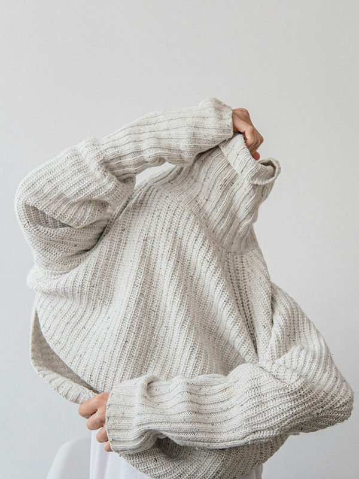
JerseysColección merino: modelo #m111
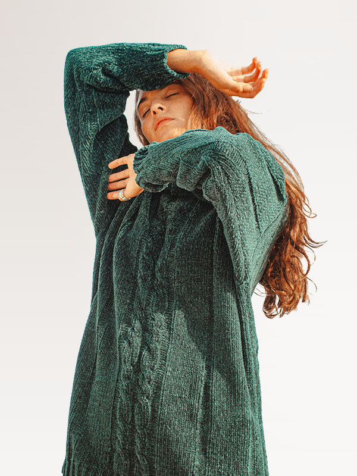
JerseysColección colores de la Tierra: modelo #ct31
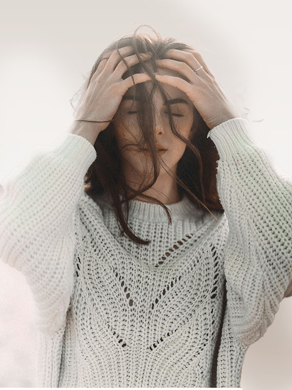
JerseysColección mix: modelo #mx81
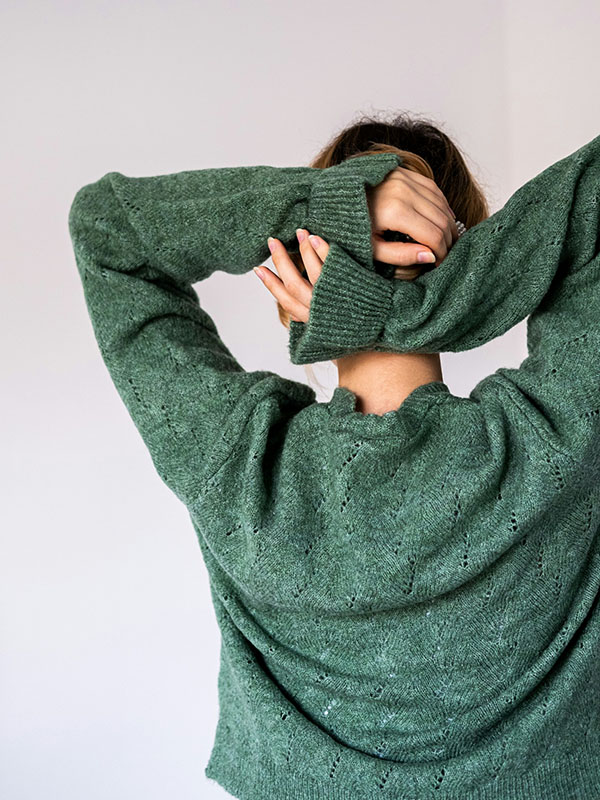
JerseysColección nature: modelo #n79
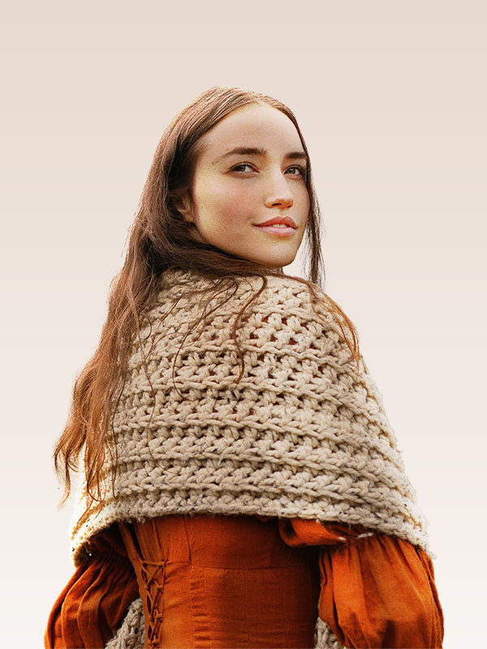
ChalColección alumbre: modelo #a88
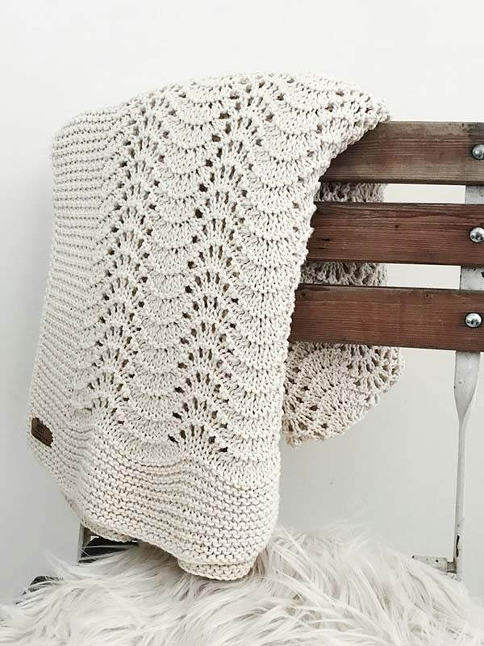
ChalColección alumbre: modelo #a23
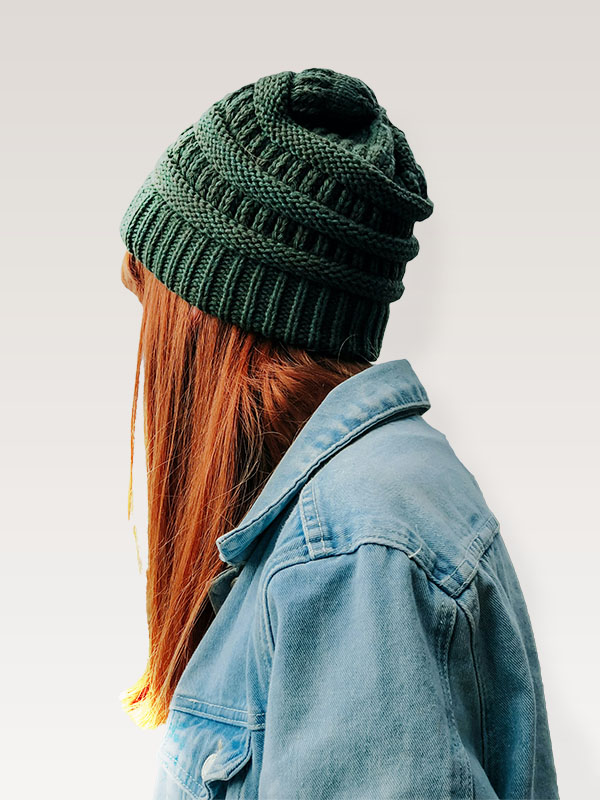
GorrosColección rainforest: modelo #rf54
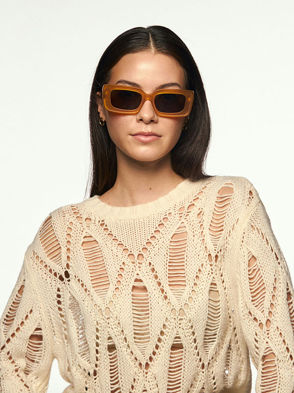
TopsColección Aura: modelo #ar48
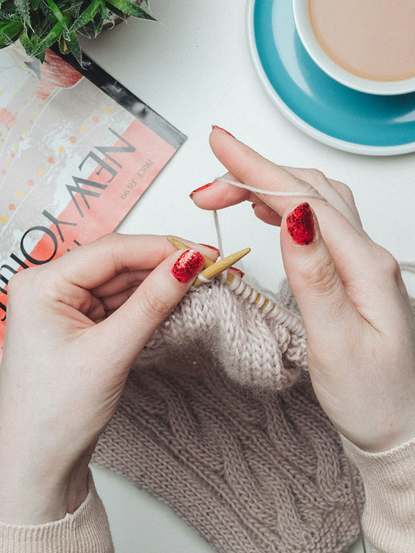
TalleresTaller de punto
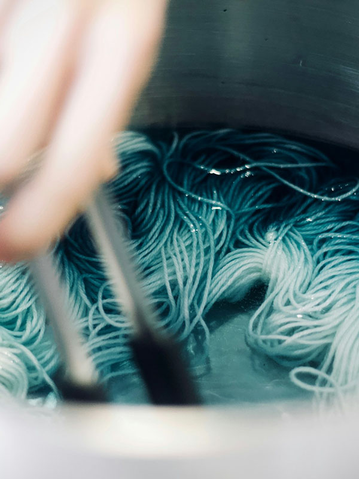
TallerTaller de teñido natural
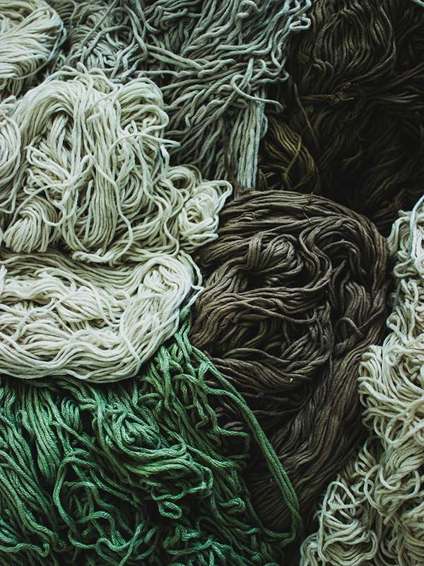
TallerTaller de teñido natural #2
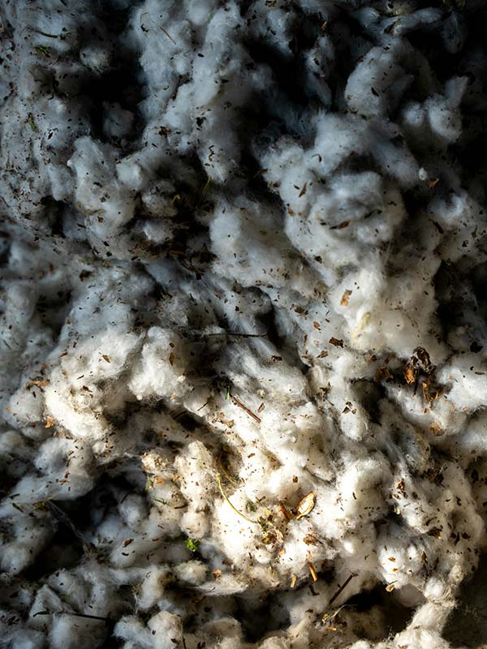
Taller